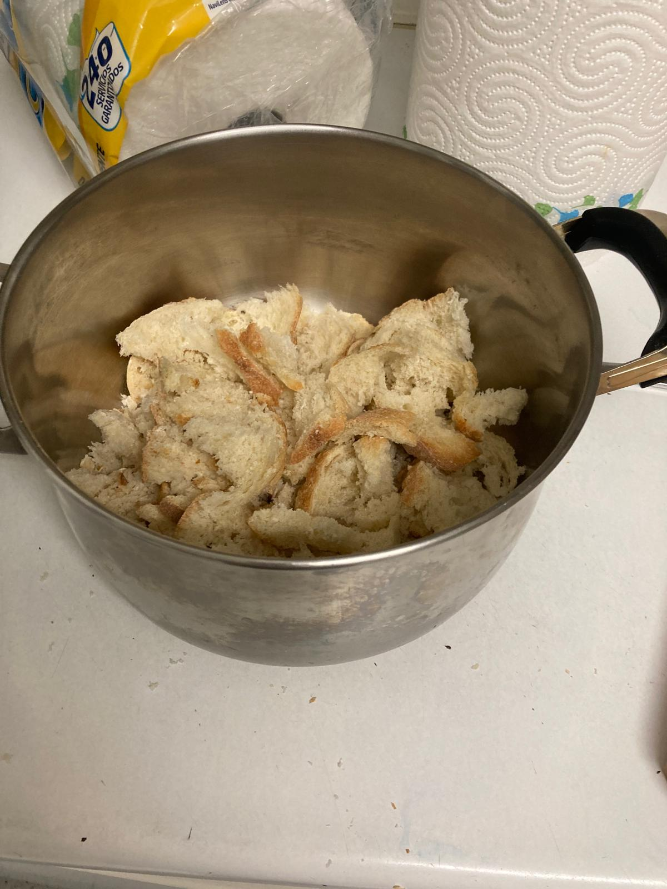
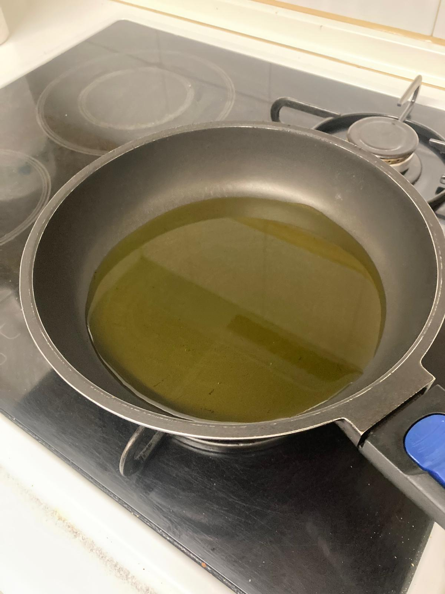
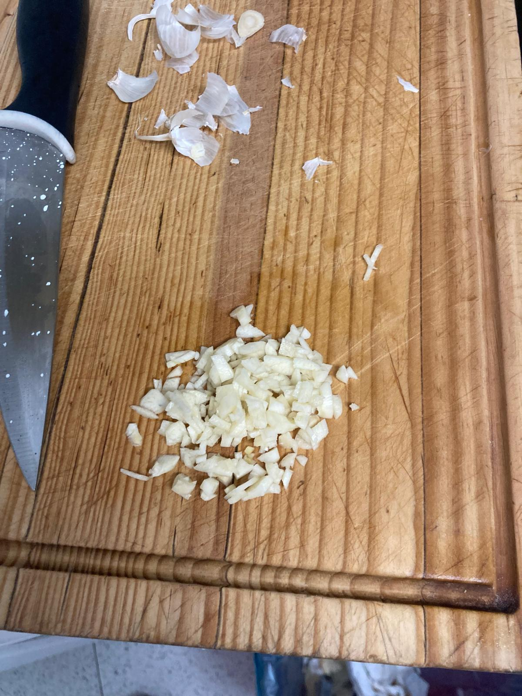
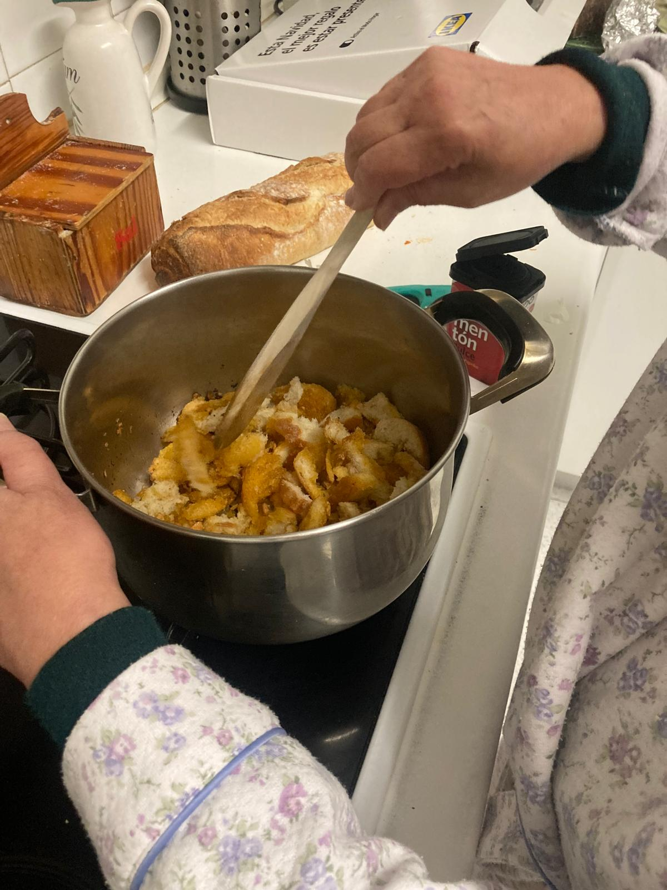
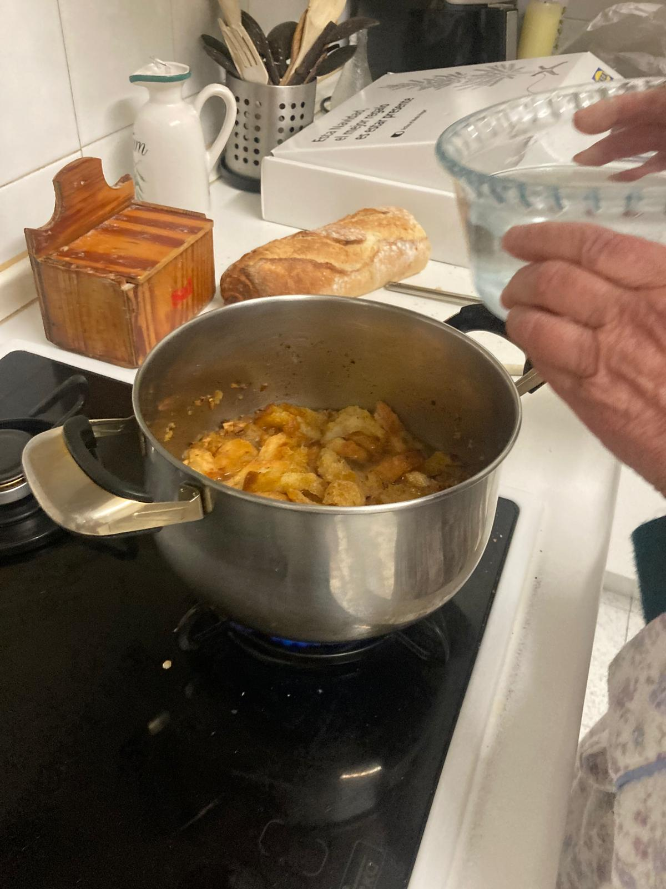
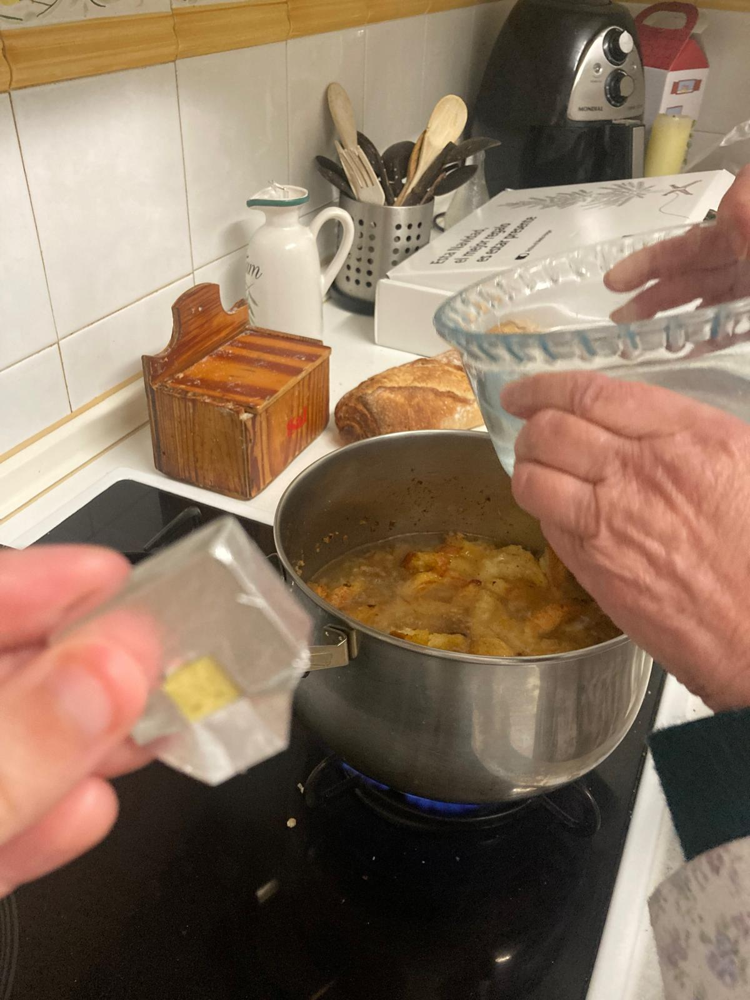
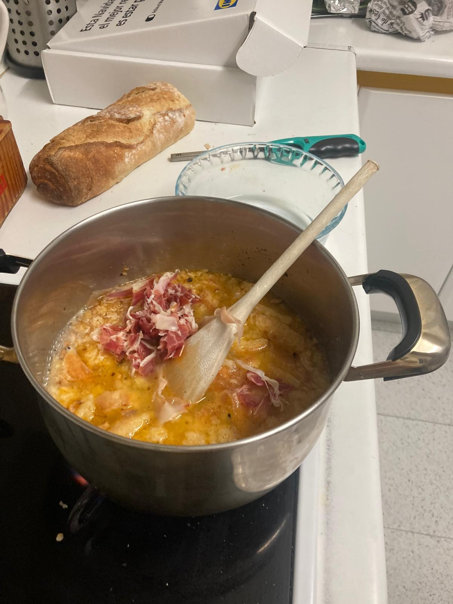
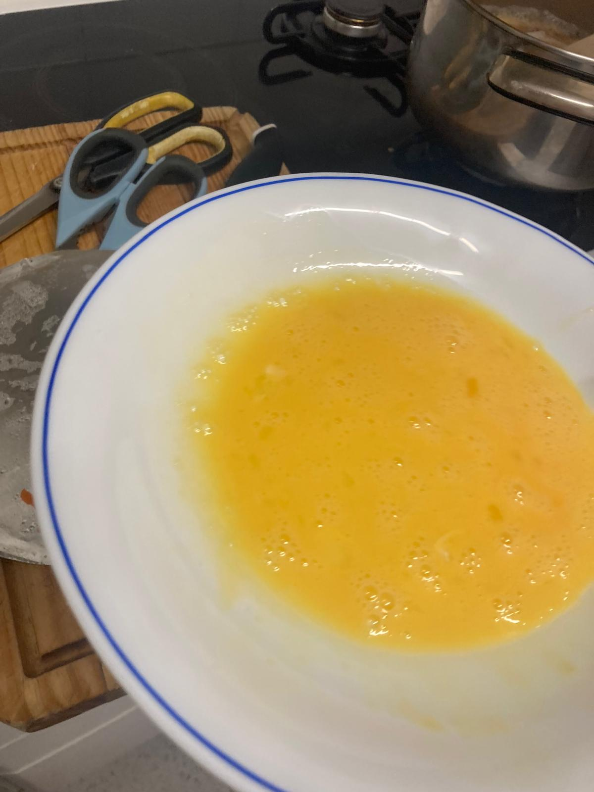
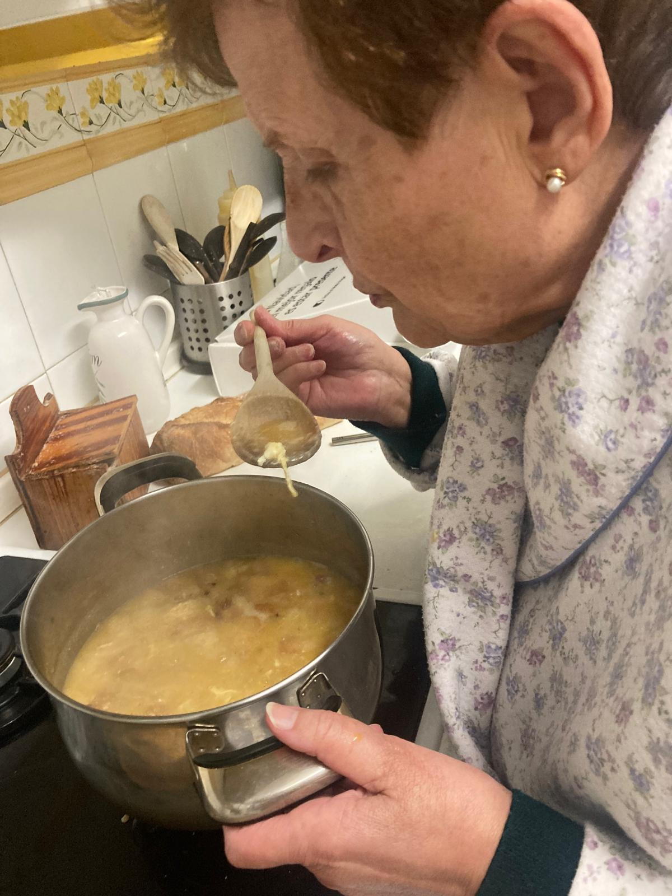
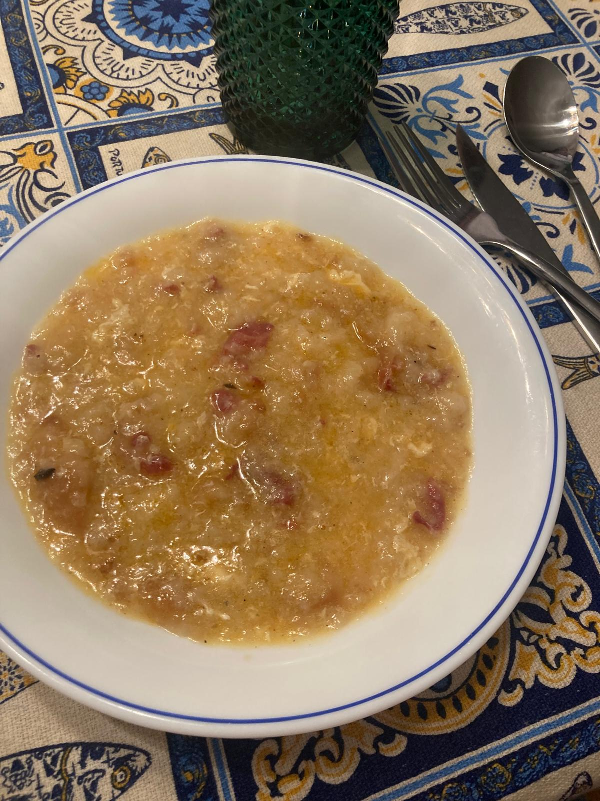

- Cortar pan del día de ayer, que esté duro pero no demasiado, en rebanaditas.
- Poner aceite en la sartén. Que cubra el fondo y un poquito más. Lo ponemos a fuego medio.
- Echamos el ajo. Cuando esté un poco doradito lo retiramos del fuego. Esperamos a que se enfríe el aceite un poco y entonces echamos un puñado de pimentón dulce.
- Lo echamos todo en la olla a fuego medio. Rehogamos el pan con el ajo y aceite, que se quede mojadito. Cuando el pan ha absorbido todo, echamos un poco de agua y el caldo. Echamos poco a poco y vamos viendo el espesor.
- Lo seguimos cocinando a fuego medio hasta obtener la consistencia deseada. Añadimos el jamón cortado en trozos. Por último, añadimos un huevo batido para adquirir la consistencia deseada. Rectificamos con sal si es necesario, dado que ya lleva jamón y caldo.










